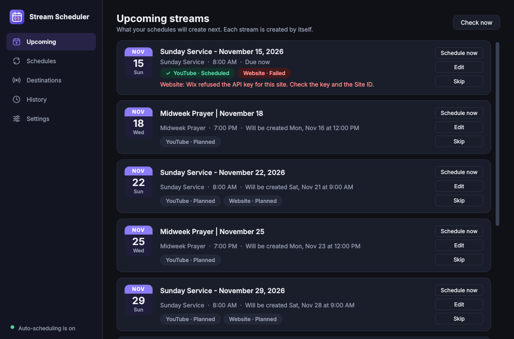

Stream Scheduler
Schedules your weekly live streams on YouTube and Facebook by itself, with the date of each stream already in the title.
Download Source code
What it does
You say when you stream, for example every Sunday at 8:00 AM, and what the title is. The app, running on your own computer, creates each scheduled live stream on your YouTube channel and your Facebook Page a chosen number of days before, through the platforms' official APIs.
Your data
Stream Scheduler is a free, open-source desktop program by Leaven Labs. It has no server: it talks from your computer directly to Google and Meta, and your sign-ins are kept in your system's keychain. See the privacy policy.